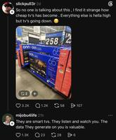

District Court Judge Eric Elliff has ordered Iron Mountain to cooperate with Nine PBS in recovering roughly 50TB of archival material stored through now-defunct vendor OSS. "He found that the station is the rightful owner of the materials and entitled to recover them from OSS' storage systems," reports Current.org. Nine PBS must identify a third party to help retrieve the files, pay outstanding storage fees, and ensure that data belonging to other OSS customers isn't disturbed or accidentally recovered. From the report: Under his order, Nine PBS is to identify a third-party vendor, such as a former OSS employee, who can assist in accessing and retrieving the data from the infrastructure that's housed in Iron Mountain's center within 30 days. Elliff acknowledged the complexities of Iron Mountain's position as a vendor to OSS, which, according to Nine PBS' complaint, is in delinquency. Iron Mountain is the "custodian" of Nine PBS' data, but it isn't the vendor that contracted with the station to store and preserve its data. That obligation remains with OSS. Under the order, Nine PBS will pay Iron Mountain current and past-due fees for data storage, starting from when OSS stopped paying Iron Mountain for use of its data storage facility.
During the hearing, Gregory Rich, an attorney representing Nine PBS, said the station seeks access to a physical cage where the data is housed within Iron Mountain's facility. The station is in contact with a former OSS employee who is willing to help obtain the data. The attorney noted that the data could potentially be stored in physical form, such as tapes that could be easily retrieved. But if the materials are on a server, Nine PBS could lose the materials forever if Iron Mountain shuts it down. William Cravens, the attorney representing Iron Mountain, told the judge his client doesn't know the format of Nine PBS' materials that were stored by OSS. He expressed concern about whether Nine PBS' archival material is lumped together with data from other OSS clients. Iron Mountain wants to avoid potentially corrupting the other data, Cravens added.
Elliff ordered the immediate return of any physical devices that hold Nine PBS' data once access to OSS' storage system is granted. If data retrieval turns out to be more complicated -- if it is encrypted, for example -- he will schedule another hearing to determine how to proceed. Once Nine PBS retrieves its data, the station must work with a third party to ensure that no data from other OSS customers is among those materials.
Read more of this story at Slashdot.
An anonymous reader quotes a report from Reuters: PJM Interconnection, the biggest U.S. grid operator, proposed on Thursday a new framework that would force data centers to use back-up generators when electricity supply on the grid approaches dangerously low levels. The grid operator's proposal dovetails with President Donald Trump's Ratepayer Protection Pledge, a non-binding initiative to protect residential customers from getting saddled with costs related to data center power consumption, PJM said.
A new emergency procedure would notify utilities to reduce or transfer the electricity demand from data centers and other large power users ahead of any action that would shut off traditional consumers such as households. PJM said it does not, however, currently have the authority to curtail power to those sites and would require the cooperation of individual state governments.
PJM manages the electricity for 67 million people in a territory that stretches from Washington, D.C. to Chicago. Its proposal highlights a growing tension between the rapid expansion of data centers and the ability of the nation's power grid to keep up. If PJM cannot close its supply gap, millions of residents and businesses face an increased risk of blackouts, and the cost of new generation could be passed on to other power consumers. At its recent capacity auction, PJM hit its $325-per-megawatt-day price cap but still came up about 6.8 GW short of its projected reliability needs.
With rapidly expanding data centers adding pressure to the grid, PJM has also proposed creating a registry to track their locations and power consumption.
Read more of this story at Slashdot.
alternative_right shares a report from 404 Media: Amazon is buying massive quantities of books, scanning them for AI training data, and destroying them in the process. A 404 Media investigation was able to reveal Amazon's book buying operation, which hasn't been previously reported, by placing a tracking device in a rare book we suspected would be acquired by an AI company for training data, and following it around the country to its final destination. That final destination was an Amazon warehouse in Las Vegas, Nevada.
Amazon employees who work at this location say all they do is receive massive shipments of printed books which they then cut the bindings off in order to scan the books more quickly. The printed book is destroyed in the process. The logo of the Amazon team that works at this warehouse, called VGT3, is a dinosaur, brandishing its teeth and with a book in its hands. "Amazon purchases books through commercial channels to help develop and improve the products and services our customers use," an Amazon spokesperson told 404 Media in a statement.
Read more of this story at Slashdot.
Some take their criticism even further. Reacting to Flock's changes, an EFF statement calls it "Too little, too late," while calling it Flock's admission that their technology needs reforms. But...
To be clear, our position has long been that police, at a minimum, need to get a warrant, signed by a judge, in order to search for historic ALPR data regarding specific vehicles. For us, it's common sense: if police want to dip into historic ALPR data like they were going back in time to retroactively follow your comings and goings, they need a warrant.
There's also nothing stopping Flock from rescinding these latest reforms.
This all leads to the bigger and more important issue: We should not be letting companies decide how much privacy we deserve... It shouldn't be up to Flock or any other ALPR vendor to decide how long police can collect and retain data on millions, if not hundreds of millions, of innocent people. We need lawmakers to step up and pass laws that restrict police's use of surveillance technology.
After all, the surveillance business model is the problem, and a few company-imposed slapdash reforms aren't going to change that.
Read more of this story at Slashdot.
Amazon has "reintroduced a clause in its user agreement that seeks to prevent shoppers from filing class-action lawsuits against the online retailer," reports Bloomberg, "inserting a legal buffer between itself and plaintiffs attorneys that it removed five years ago."
In an email sent to customers on Friday, the company said a new "arbitration agreement and class-action waiver" will require shoppers to resolve disputes outside the courts but said they could still file small claims, cases that typically limit damages to a few thousand dollars... The user-agreement update isn't necessarily binding in court. Plaintiffs attorneys could still seek class-action lawsuits against Amazon, and it would be up to a judge to determine if the user agreement prevents them from doing so.
Amazon was contacted for an explanation by Bloomberg, and provided a statement saying they continually update their wording "to better serve our customers."
Amazon said they'd "determined" that "reinstating the arbitration clause will offer customers a fast, cost-effective way to resolve disputes while still giving them the option of going to small claims court."
Read more of this story at Slashdot.
Politico notes that over 20 local jurisdictions in America "either stopped using Flock cameras or began the process of doing so in July, according to a tracker maintained by DeFlock, an activist group that has been mapping the company. It's the highest amount in a single month since they began tracking in 2021."
Some local officials said the public safety promises weren't worth the cost. The cameras "didn't help us with anything. From a utility aspect, they were just kind of not useful," said Eric Couture, a Democratic first selectman in Killingworth, Connecticut, another city that recently canceled its contract with Flock. "I'd say it was a net negative."
And their article adds that it's a bipartisan pushback that "runs parallel to sprawling fights over the future of technology in American life, including the rise of increasingly advanced artificial intelligence tools and the construction of massive data centers needed to power them."
Salon even argues Flock's cameras "have become a symbol of growing anger over the efforts by technology oligarchs to impose their dystopian fantasies on the country, replacing liberal democracy with a surveillance state... People are sick of tech billionaires trying to control our lives""
By targeting Flock cameras, activists are building momentum for a larger rebellion against the tech industry — and against political leaders who are complicit in their assault on our freedoms. Flock Safety embodies the dishonesty that has been the prevailing theme of tech corporate communications and marketing for at least the past decade. While the cameras are sold to the public as a banal traffic safety measure, they have prompted an outpouring of stories about how they're being used to violate civil liberties and undermine democracy...
According to an exhaustive 10-month analysis by Electronic Foundation Frontier, a nonprofit dedicated to defending civil liberties in our digital age, local police were using the cameras to track protesters, such as those at No Kings rallies, who were then put in a national database to be used across all jurisdictions. Despite claims that the cameras only record license plates, the technology-focused outlet 404 Media found that the database is also being used to collect information on individual people whom cops can then search for using descriptions of clothing, race, gender and body type.
The Flock uprising, though, is the stirrings of public understanding that none of this inevitable — and we have the right to fight back... Along with protests against data centers, it's a sign that the public is desperate for a way to fight back against not just AI, but also the anti-democratic forces fueling this latest tech wave.
Salon's writer also adds that "what stands out about the burgeoning public rebellion against Flock security cameras is just how fun it all is," citing "a national cat-and-mouse game between vandals and cops that is being merrily followed on social media, mostly by people rooting for the vandals."
City council meetings in which citizens swarm to protest paying for the cameras are the new must-see TV. In Huntington, West Virginia, a small city in the heart of Appalachia, one man became an internet folk hero when he stood up at a city council meeting and said, "I'm not gonna waste your time; I'm kinda hungry. But one last thing: Every single Flock camera has about 2-3 pounds of copper and about 1-2 grams of gold. Do with that information what you will." He then walked off in triumph.
Read more of this story at Slashdot.
This week Anthropic announced its Claude chatbot will watermark the text it generates, reports the blog Futurism. "It works by making subtle changes in the AI's word choices across the text it generates, which are supposed to be imperceptible to a human but, in aggregate, form a pattern that is detectable with the tool."
Anthropic said it was implementing the watermark system in response to the European Union's landmark AI Act passed in 2024, which requires that AI companies mark content that's been generated or edited by their systems.
TechCrunch notes that other companies including Google, Meta, Microsoft, OpenAI, and Synthesia have committed to adhering to the EU's code. But "The news about Claude watermarking kicked off a firestorm on X," reports Forbes, "with users panicking that AI-assisted writing will now bear a kind of permanent 'scarlet letter.'" (Forbes wonders if media companies are normalizing AI "while at the same time stigmatizing the output.")
But there's another issue. Anthropic said the watermark indicates Claude processed text, Business Insider points out, "not that it was necessarily the original author. The company said marks can remain after Claude proofreads, translates, summarizes, or otherwise edits content... a watermark shows that Claude processed text, not necessarily that it wrote it."
In the days since, "Dozens of people have posted on X since Monday that they had canceled their Claude subscriptions, citing the watermark."
Vladislav Rajtmajer, a freelance developer in the Czech Republic, told Business Insider he canceled his Claude Max subscription on Tuesday, citing the watermark as the main reason. He said he uses AI for code reviews and translations, and worried an AI label on code shipped to clients could raise questions about authorship or trigger contract penalties... Richard Echols, an AI consultant in Georgia, also said he canceled his Claude Max subscription on Wednesday and that the watermark was a major factor in his decision. He said he uses Claude to create documentation for businesses and worried the mark could appear when he had written the underlying material himself and used the chatbot only for edits. "Even if you edit your own work that you wrote, they add the watermark anyway," Echols said...
Anthropic isn't the only AI lab to use watermarks: Google uses its SynthID technology to watermark AI-generated content, and OpenAI uses SynthID for supported images and audio. Elon Musk's social media platform X also adds a "Made with AI" tag on content it determines to be AI-generated or manipulated.
Long-time Slashdot reader kmleon (also a tech consultant and RPG researcher) experienced another issue. He'd built some software using their own custom-built AI tool, only asking Claude to do some testing. "Little did I know that Claude would sometimes decide, since it was involved on the edges... to take credit for all of my work, claiming some parts were either '100%' or 'Co-Authored/Created' by Claude.Ai / Claude Code!"
I'm sure the good folks at Anthropic will eventually tweak Claude enough to, hopefully, not make these mistakes in the future.... I only became aware of it today, because I recently setup scanners to catch Claude incorrectly watermarking any content it touches for various projects I'm working on. I found that it has (apparently as far back as Sonnet 4.6, but as recently as today, August 14th, 2026) sometimes been mistakenly over-zealous in taking credit for 100% creating or co-authoring docs, code, images, videos, etc. I've only, so far, found about a dozen instances spanning the past year, and most of them appear to have been injected in the last few weeks, so it is not a common issue (yet).
On the bright side? Maybe watermarks can help AI stop training on AI-generated text.
Although Forbes also reports that
Google "announced on Friday that it will now let users remove the visible watermark from AI-generated images, videos and music created with several of its models."
Read more of this story at Slashdot.
"We are in a 21st century space race," U.S. Senator Ted Cruz has said. And this week CNN noted a competition that for decades loomed in the background of geopolitics "is now roaring to the forefront," with China "demonstrating rapid advances in space technology" while the U.S. is "ratcheting up rhetoric about a looming battle for control of the cosmos."
It's the fact that China plans to build a permanent settlement on the moon by 2040 that has prompted an urgent response from [U.S.] lawmakers... They've declared a new space race, and NASA is pledging to build a lunar outpost of America's own.... Both the United States and China plan to send robotic explorers to the south pole later this year, paving the way for human explorers to follow close behind.
The US is relying on the private sector to develop and build low-cost, exploratory robotic landers... Meanwhile, China is aiming to launch its robotic Chang'e-7 mission as soon as this month. The complex endeavor will seek to use four different robotic vehicles — an orbiter, lander, rover and mobile "hopper" — working in tandem to attempt to gather unprecedented data. The effort will include tools to drill for and directly analyze water ice, a feat that the US will only attempt with robotic missions slated for next year at the earliest. "If lunar water ice is successfully located, it could significantly reduce the cost and time required to transport water from Earth, facilitating the establishment of a human base for long-term activities on the moon and enabling further exploration of Mars or deep space," Tang Yuhua, the deputy chief designer of the Chang'e-7 mission, said in a 2025 interview with state media.
The oncoming flurry of south-pole-centric activity, with few established international laws to govern the outcomes, is heightening the drama of this rivalry... But with a much more ambitious goal — a future in which people attempt to flourish within permanent settlements rather than just visit the moon — the stakes of this new space race are even higher, according to Clayton Swope, the deputy director of the Aerospace Security Project at the Center for Strategic and International Studies, a bipartisan nonprofit. "The long-term vision will take generations to execute on," Swope said. "But in my mind, it's a scenario where there are people being born, people dying, their families, children growing up in a place that is not Earth — so that looks a lot like a city, more than it looks like an expedition to the south pole." If such a future comes to fruition, Swope added, his hope is that such extraterrestrial colonies would be governed by rules reminiscent of Western ideals and democratic principles. Whether China would be on the same page is an open question.
China is already fine-tuning its plans for a lunar settlement, CNN writes:
The country envisions the International Lunar Research Station, or ILRS, as a sprawling science-focused facility on the moon's surface that can be operated robotically, "with the prospect of subsequent human presence," according to a government's ILRS website. China could partner with Russia to build a massive nuclear reactor to power the base, though questions remain regarding how the war in Ukraine may impact Russia's ability to deliver... China and Russia were mapping these plans long before the US announced its own intention to build a nuclear reactor on the moon last year and detailed its plans for a lunar settlement spanning hundreds of square miles... Who will write the rules? And how, exactly, will the use of lunar resources be policed on the international stage?
Meanwhile, NASA "still does not have a vehicle capable of getting astronauts down to the lunar surface," the article points out:
Returning to the moon is not as simple as repeating Apollo. The space agency cannot — and does not wish to — replicate its 20th century lunar-landing success. The supply chains, skilled machinists and factories that built Apollo's rockets, landers and command modules no longer exist. And while the Apollo landings stuck close to the lunar equator, landing near the south pole is substantially more complex and requires more powerful vehicles.... China, meanwhile, has been laser focused on its lunar exploration program since 2004, using its top-down, central planning system to keep resources flowing toward specific goals.
Read more of this story at Slashdot.
Apple Wallet's driver's license and state ID feature is set to expand to North Carolina, Oklahoma, Utah, and Virginia, bringing the total to 18 states plus Puerto Rico. The digital IDs can be used at participating TSA checkpoints and businesses without handing over or unlocking an iPhone, though users are still generally advised to carry a physical ID because acceptance remains limited. MacRumors reports: A few days ago, North Carolina's DMV announced that it plans to launch a mobile ID program later this year. As reported by WRAL, North Carolina residents will be able to set up a digital ID through a new NC Wallet app starting in December, with Apple Wallet, Google Wallet, and Samsung Wallet support to follow in "early 2027." As mentioned, you do not need to unlock, show, or hand over your device to present an Apple Wallet ID in person, ensuring user privacy.
Apple Wallet IDs are generally not accepted by law enforcement, so carrying a physical ID is still legally required for traffic stops. In addition, the number of businesses that accept Apple Wallet IDs is still quite small. At least for now, Apple Wallet IDs are designed to be a convenient alternative where they are accepted. "Your mobile ID is a valid form of identification in North Carolina," the DMV said, in a FAQ on its website. "However, as retailers, restaurants and other businesses transition to mobile IDs, some may not be set up to accept them right away. For now, carrying your physical card gives you a backup when needed." According to code seen by MacRumors, Apple Wallet IDs are also coming to Oklahoma, Utah, and Virginia, but there is no timeframe for availability.
Read more of this story at Slashdot.
Meta is heading to trial in a case brought by dozens of states accusing it of deliberately designing addictive features, misleading users about safety, and illegally collecting data from children under 13. Meta says the states are seeking penalties as high as $1.4 trillion, though the judge has already called that figure "unreasonable." The case could, however, influence thousands of similar lawsuits against the company. Engadget reports: The trial kicks off Tuesday in federal court in Oakland, California, after Meta lost a last-ditch attempt to get the case dismissed last week. It could see testimony from top officials at Meta, including Mark Zuckerberg, and could result in record-breaking penalties for the company. The case stems from a 2023 lawsuit brought against Meta from dozens of states, which accused Meta of intentionally creating addictive features and violating consumer protection laws. The action came after a multi-state investigation into the company's safety practices that officials said revealed serious harms to children and teens.
During the trial, federal Judge Yvonne Gonzalez Rogers will hear claims from California, Colorado, Kentucky and New Jersey that Meta violated state consumer protection laws by intentionally misleading the public about the safety of its apps. Those four states and 25 others are also suing Meta over alleged violations of the Children's Online Privacy Protection Act (COPPA). The states allege Meta broke the law because it knew Instagram and Facebook had users under the age of 13 and collected data about them without permission. [...] For Meta, the stakes are especially high because the company is currently facing thousands of other lawsuits that accuse it of harming users. Juries in Los Angeles and New Mexico have already ruled against Meta in high-profile trials that deal with similar issues. (Meta has said it will appeal in both cases.) Another loss could not only be a financial blow, it could give other lawsuits an easier path forward. And while Meta isn't exactly hurting for money, its legal costs are adding up. The company said it spent $2.4 billion on legal costs in the second quarter of 2026 alone.
The jury in the case has already been selected and opening arguments are set to begin Tuesday, August 18. The trial is expected to last about six weeks. Unlike in a standard jury trial, the eight-member jury will serve in an "advisory" role, as Law360 explains. The judge will have full power over the final verdict and penalties. Along the way, the trial could also see testimony from some of Meta's most visible executives, including CEO Mark Zuckerberg and Instagram chief Adam Mosseri. Both men are likely to testify, according to Reuters. [...] Audio from the trial will be live streamed on the court's YouTube channel. A spokesperson for Meta issued the following statement: "The State AGs may call this a landmark case, but their limited claims are unsubstantiated and their financial demands are vastly disproportionate. The AGs offer no proof anyone in their states was misled, claim benign features like having an additional Instagram account somehow harmed their residents, and attempt to penalize Meta for industry-wide challenges like age verification," the spokesperson continued. "Rather than sticking to the facts or the law, the states have instead decided to chase an outlandish payout. We stand by our record of creating strong protections for teens, and look forward to making our case in court."
Read more of this story at Slashdot.
OpenAI has signed a 10-year lease for an enormous Ohio data center that will eventually provide 8 gigawatts of computing capacity and require at least 10 gigawatts of new power generation. According to OpenAI, Nvidia will be supplying the chips and guaranteeing up to $105 billion in lease and power obligations. From the report: The facility -- which will be built and owned by SoftBank's SB Energy -- illustrates the immensity of the computing and power needed to fuel the growth of the AI economy. The data center will have 8 IT-gigawatts of computing capacity, powered by 10 gigawatts of new energy generation, on private land and federal property formerly used for uranium enrichment.
Nvidia -- which will be the exclusive provider of chips to the site -- agreed to guarantee up to $105 billion in conditional lease and power payment obligations to SB Energy, according to an SEC filing (PDF). The so-called "land, power and shell" deal structure could allow for multiple upgrade cycles for new generations of Nvidia infrastructure at the site, Nvidia CEO Jensen Huang said on X.
A massive 9.2 gigawatts of new gas-fired power is ultimately envisioned for the Ohio project, which U.S. officials say Japan is funding under the 2025 trade and investment deal. SB Energy and SoftBank "will build at least 10 GW of new energy generation," a joint announcement from Nvidia, OpenAI and SB Energy states. Nvidia also said today that it's investing $1.5 billion in SB Energy to back its "continued evolution into a leading AI infrastructure developer."
Read more of this story at Slashdot.
Anthropic CEO Dario Amodei says the growing backlash against AI is less about executives sounding alarms and more about a broader "crisis of trust" in companies, governments, and the tech industry. TechCrunch reports: Amodei's comments came in response to investor Gavin Baker, who argued -- both on the All-In podcast and on X -- that Amodei's warnings about the dangers of AI have helped to fuel a backlash in the United States, particularly against data centers.
Claiming that Amodei has "lost the argument" when it comes to AI regulation (Anthropic has advocated for some regulations, including a California bill that imposes transparency requirements on large AI companies), and given that "he is about to be the CEO of one of the most important companies in the world," Baker wrote, "I respectfully think he should make an effort to be a more positive advocate for his own industry."
Baker is far from the only one arguing that AI skepticism and even government crackdowns are a natural response to the dire warnings of some AI executives. But in a series of posts, Amodei disagreed with the idea that his "messaging has been disproportionately negative." Instead, he said that his writing has been "about equally balanced between risks and benefits," and that he wrote his essay "Machines of Loving Grace" because he "didn't feel the AI industry was painting an inspiring enough picture of how the technology could radically transform the world for the better."
Nonetheless, Amodei acknowledged that "the public has a negative view of AI" and he agreed that "this is a big problem." Where he disagreed was with the idea that this negativity is "primarily caused" by Amodei "or any other AI leader warning about AI's risks." "I think it is fundamentally a crisis of trust," Amodei said. "I think that ordinary people don't trust companies, governments, or the tech industry and always suspect that we are cooking up some new way to screw them over."
Read more of this story at Slashdot.
An anonymous reader quotes a report from The Register: If you want to record whatever you do on a computer, send those records to OpenAI, use more ChatGPT tokens, and increase your vulnerability to prompt injection, then OpenAI has something for you. It's called Computer History, an opt-in way to record your computer interactions across apps and websites as memories organized on a timeline.
Why would you want to do so? Maybe you found Chronicle, the predecessor of Computer History which compiled similar histories using screenshots, a bit too intrusive but don't mind Computer History's approach -- recording input events and storing them unencrypted locally for 48 hours (or more), with a brief visit to OpenAI's servers. Maybe you're not bothered by the warning OpenAI includes in its documentation: "Computer History files can contain sensitive information. They are not encrypted by Computer History, and other programs running as your macOS user may be able to access them."
Perhaps, having given OpenAI's Codex and GPT Work the run of your computer, you're already sold on the suggestion that storing your computer activity in memory files and arranging those interactions in a timeline will improve ChatGPT responses, surface opportunities for automation, and make it easier to resume prior work. Computer History is, to put it bluntly, a keylogging and event capture system. "Computer History creates an interaction-event stream from allowed apps and websites," OpenAI's documentation explains. "Events can include clicks, typing, keyboard shortcuts, app switches, and context that macOS exposes through its accessibility system. Computer History periodically turns these events into text summaries and local memory files." OpenAI says the feature doesn't capture screen images, microphone input, or system audio. It also doesn't record private-mode browsing.
"Turn it off during communications with other people unless you have their prior express consent," the company advises, perhaps in acknowledgement of legal risk. "Consider pausing it or excluding apps that contain sensitive health, financial, or personal information." ChatGPT and Codex delete locally stored Computer History interaction events after 48 hours, but data sent to OpenAI to generate memories may be retained locally longer and reused in future chats.
Read more of this story at Slashdot.
"Epic Games has confirmed that it is working on a Linux version of its storefront, potentially removing the need for third-party launchers on platforms such as Steam Deck," reports PC Guide:
The confirmation came during an Ask Me Anything (AMA) on the Epic Games Store's community Discord server. When a user asked whether Epic had any plans for a Linux version of its launcher, an Epic staff member confirmed that it is coming "soon(TM)" in emoji form. Of course, that is far from confirming any kind of date, but it is official confirmation of a Linux version nonetheless.
"On top of that, Nvidia's GeForce Now [cloud gaming] app for Linux is also official, having emerged from beta," writes TechRadar, calling it all part of "a rosier future for Linux gamers."
And while it's not related to gaming, OpenAI's ["preview"] release of a ChatGPT app for Linux is another milestone for the platform... OpenAI said: "Linux has been one of the most-requested platforms for the desktop app, and this launch extends ChatGPT and Codex across every major desktop operating system." The Epic Games Store arriving natively is great news for gamers running Linux — including SteamOS — as it means a much more convenient way of playing games from the store, as opposed to the current situation with fudging and workarounds (using a third-party app such as the Heroic Games Launcher)...
Epic's own Fortnite doesn't work on Linux (and that's down to Epic actively blocking the game from running due to issues around cheating, which remains a source of controversy). Given the apparent changing attitude here with its launcher being ported over, maybe Epic will reverse course on Fortnite eventually. Some gamers on Reddit are highly skeptical about that possibility though, and as one doubting Redditor put it: "I wouldn't hold my breath."
Read more of this story at Slashdot.
Linux Kernel 7.2 has just been officially released with a slew of new features, reports the blog 9to5Linux.
Highlights of Linux 7.2 "include cache-aware load-balancing support, initial HDMI 2.1 FRL support to the AMDGPU driver, support for devres-based management of ACPI notify handlers, initial CRI platform support for the Intel Xe driver, and Rust support for the IBM System/390 (S/390) architecture."
Linux kernel 7.2 also introduces a "Fair(er)" GPU scheduler, support for the 'zerocopy' library to Rust support to make zero-cost memory manipulation effortless, new hwcaps for the 2025 dpISA extensions on the AArch64 (ARM64) architecture, and enables large folios by default for the Btrfs file system.
It also brings Intel CPU model number support for Panther Lake R processor series, improvements to the kernel's swap subsystem, support for multi-size transparent huge pages (mTHPs) to the khugepaged kernel thread, and support for compressed files to the SMB filesystem.
On top of that, Linux 7.2 improves the new NTFS filesystem introduced in Linux kernel 7.1, adds devicetree updates for 64-bit NXP/Freescale and Qualcomm platforms, introduces MPTCP signaling support for IPv6 addresses, adds GRO/GSO support for PPPoE, and brings more SMP load-balancing updates... [T]he TCP authentication option has been implemented, and there are also some Thunderbolt networking improvements.
Also worth mentioning is that the KVM subsystem has received support for AMD's "guest-mode execution trap" and Intel's "mode-based execution control" (MBEC) features, the NFS file system's default block size was bumped to 4MB on systems with at least 16GB RAM, and support for the Intel Trusted Domain Extensions (TDX) feature has been added.
Thanks to Slashdot reader prisoninmate for bring the news.
Read more of this story at Slashdot.
David Sacks / @davidsacks : David Sacks says “Dario Amodei believes frontier AI is too powerful to distribute; we believe it is too powerful to centralize” after Amodei shared policy ideas — Some thoughts on Dario's post: 1. Dario does not actually address Gavin Baker's account of what he said - something he could easily deny if it were inaccurate. 2. Dario claims his critics live in a “bubble” where all regulation equals regulatory capture. He calls this an overly
Samantha Cole / 404 Media : Pornhub's parent company, Aylo, will pay $120M to settle two 2021 class action lawsuits in California and Alabama alleging it profited from child abuse material — The deal settles class action lawsuits claiming Mindgeek's sites hosted and profited from abuse videos of minors.
Alan Neuhauser / Axios : Sources: Crusoe is in IPO talks with at least four Wall Street banks, including JPMorgan, which is advising on its $3B pre-IPO fundraise set to value it at $35B — Crusoe, a data center developer and power supplier, is in IPO talks with at least four Wall Street banks, Axios Pro has learned.
Jonathan Vanian / CNBC : Opening arguments begin Tuesday in the state AGs' social media addiction lawsuit against Meta; New Mexico AG says the consequences could be “astronomical” — If New Mexico created the blueprint for taking on Meta, California could determine the company's fate when it comes to critical changes at Facebook and Instagram.
Stacy Cowley / New York Times : BNPL lenders like Flex, Zip, and Affirm are now pitching loans for basic household needs; Americans spent $160B through pay-later loans in 2025, up 2x from 2023 — The rapid growth of pay-later loans raises questions about whether their popularity is driven by consumer preference or desperation.
Bloomberg : Sources: Anthropic's revenue run rate reached $65B by the end of July, up from $47B in May and $9B in late 2025 — Anthropic PBC is on track to generate annualized revenue of more than $65 billion based on its current performance, according to people familiar with the matter …
Dominic-Madori Davis / TechCrunch : African defense tech company Terra Industries, founded in 2024, raised a $52M seed round from 8VC and others, and says it's on track to book $100M in contracts — African defense tech company Terra Industries on Monday announced an additional $18 million in funding, bringing its seed round to $52 million.
Bloomberg : Sources: the US DOJ has been investigating a16z for nearly a year over whether its partners are improperly serving on the boards of competing AI companies — Venture capital firm Andreessen Horowitz is the focus of a Justice Department antitrust probe over whether its investment partners …
Cursor : Cursor says it is rolling out its code hosting service Origin in early beta on all paid plans, featuring support for repos, pull requests, GitHub sync, and more — Cursor can now host your code. — Origin begins rolling out today in early beta on all paid plans.
Emma Roth / The Verge : YouTube will start counting a view as soon as a video starts to play, from August 24, lining up with the system used by Instagram, TikTok, and its Shorts videos — By tracking views from the instant a video starts to play, YouTube's new counter works more like TikTok, X, and Instagram.
James Nani / Bloomberg Law : Google wins a bankruptcy auction with a $10M bid to acquire deidentified business data, software code, and more from Spirit Airlines to improve its AI models — Google LLC won a bankruptcy auction for a trove of deindentified business data, software code, and operations records …
Tobias Burns / CNBC : Nvidia's $500B funding package announcement for AI infrastructure follows SEC's July guidance that confirmed looser restrictions for data center securitizations — Recent Securities and Exchange Commission guidance is underpinning the debt-fueled data center buildout to support artificial intelligence.
Simon Foy / Financial Times : Monzo Chair Gary Hoffman is leaving after some of Monzo's biggest shareholders called for his removal following the board removing TS Anil as CEO in December — Digital bank removed TS Anil as chief last year before reinstating him to board after investor rebellion
Reuters : A German regulator says Apple will make changes to ATT, after finding Apple gave its apps more favorable consent prompts than those of third-party developers — Apple will change rules governing how app developers can use personal data for targeted advertising on iPhones and iPads …
Mayank Parmar / BleepingComputer : Microsoft says the outage affecting GitHub's API, Actions, Pull Requests, and other services has been mitigated, three hours after it first confirmed the outage — GitHub is down for some users as a widespread outage is causing errors across the website, API, Actions, Pull Requests, and several other services.